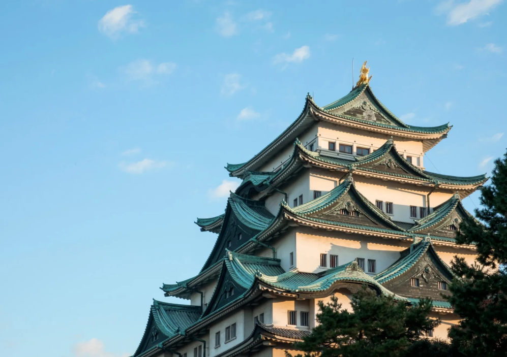
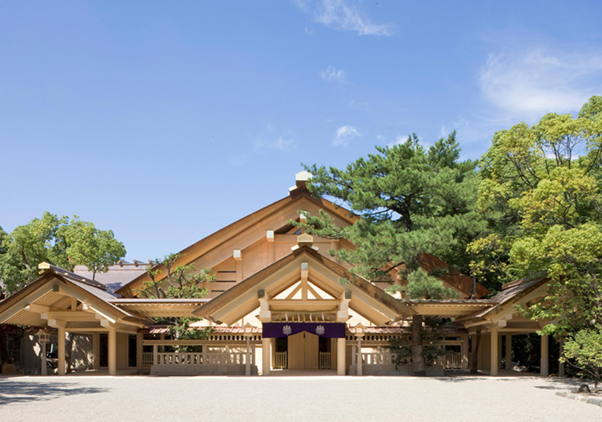
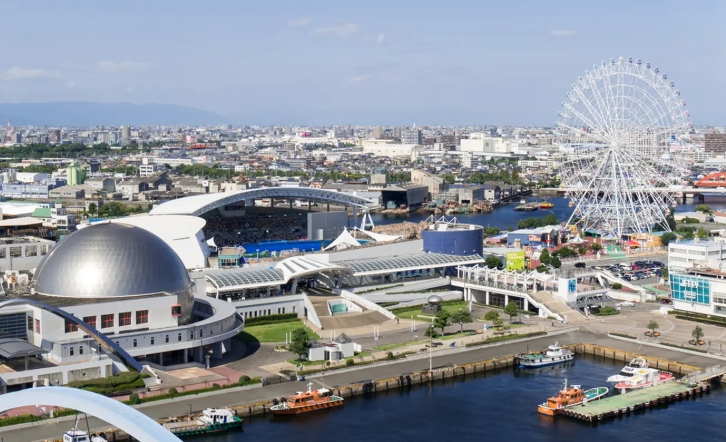
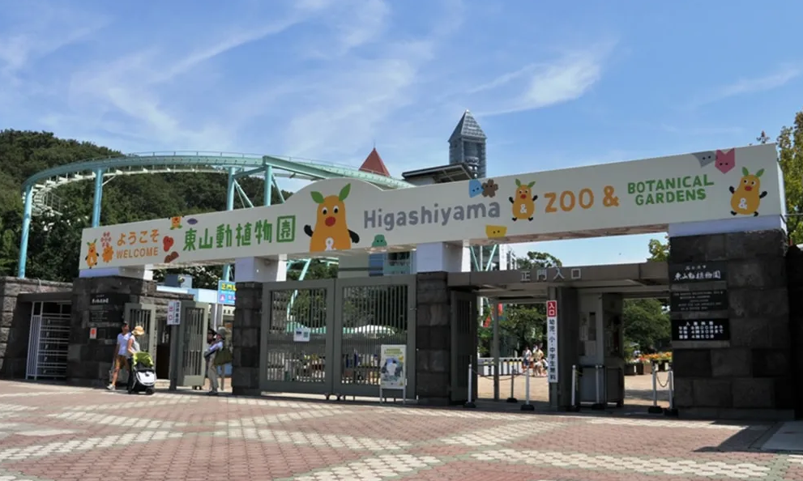
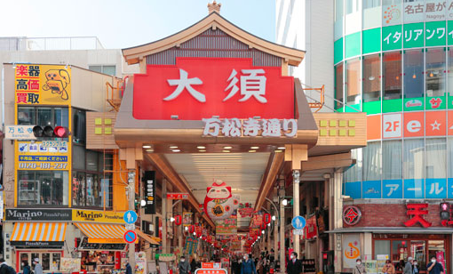
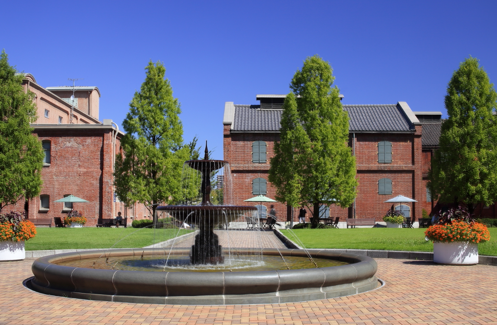
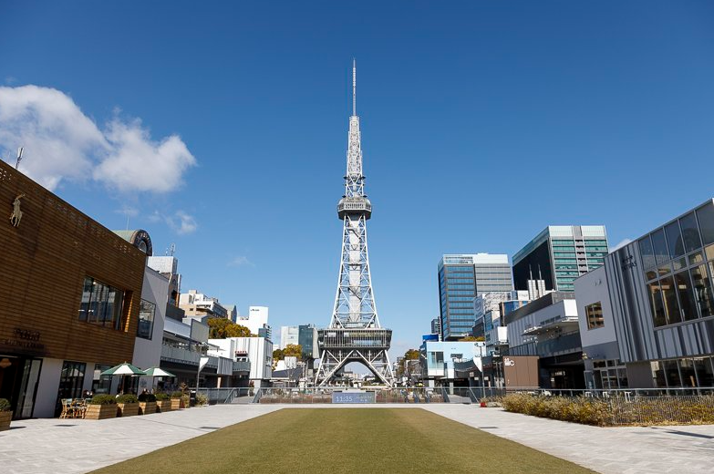
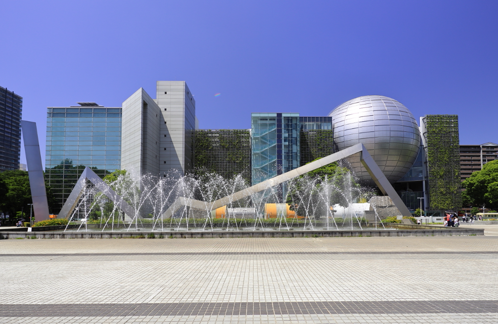
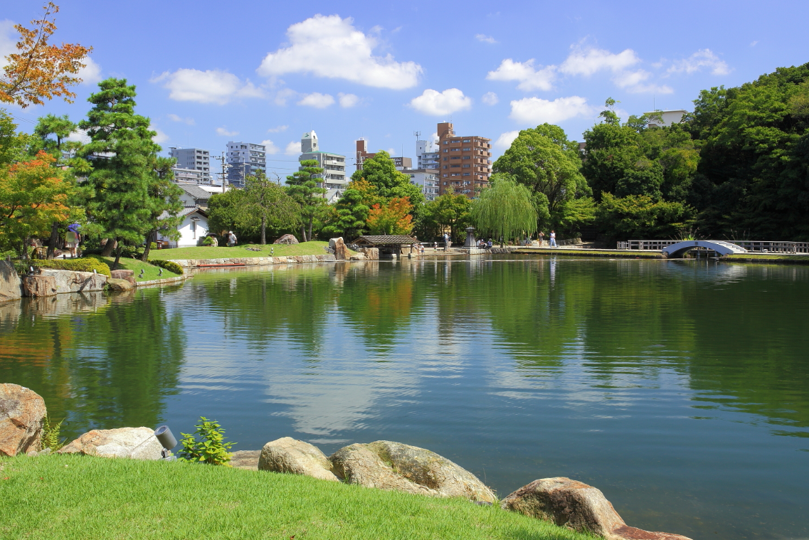

観光スポット
愛知県西部に位置し、1610年に徳川家康が町ごとすべてを移した“清須越し”によってスタートした名古屋市。東京、大阪につぐ大都市でありながら、「名古屋城」「徳川園」などといった近世武家文化を感じるスポットが多いのも特徴です。

名古屋城
1615年、徳川家康によって建てられた名古屋城。 黄金の鯱を頂き、史絢爛豪華な本丸御殿、 城郭として国宝第一号に指定された名城でした。

熱田神宮
三種の神器の一つである「草薙神剣（くさなぎのみつるぎ）」を祀る神社として全国的に知られている。 伊勢神宮に次ぐ格式の高い神社。

名古屋港水族館
シャチやイルカ、ベルーガ（シロイルカ）などの海の生き物を間近に見られる、愛知県名古屋市港区にある日本最大級の公設水族館です。

東山動植物園
愛知県名古屋市にある、コアラやゴリラなど約450種の動物を飼育する日本一の飼育種類数を誇る市営の総合公園です。

大須商店街
約1,200店舗が軒を連ねる名古屋最大の繁華街であり、グルメ、サブカルチャー、歴史が混ざり合う「ごった煮」の雰囲気が魅力の活気あふれる場所です。

ノリタケの森
愛知県名古屋市にある、陶磁器メーカー「ノリタケ」が創立100周年を記念してオープンした緑豊かな複合施設です。

中部電力 MIRAI TOWER
屋上階の水の宇宙船、地上階の緑の大地、1階のバスターミナル、地下階の銀河の広場、ショップからなっています。

名古屋市科学館
愛知県名古屋市中区の白川公園内にある国内屈指の総合科学館です。主な特徴として、世界最大級のプラネタリウム、高さ9mの人工竜巻ラボがあります。

徳川園
愛知県名古屋市東区にある池泉回遊式の美しい日本庭園です。尾張藩主の隠居所を起源とし、豪快な岩組みや四季折々の自然が楽しめます。